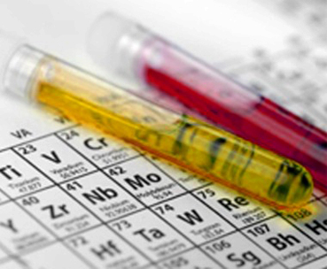

Welcome to The Drexel ECSL
The Electrochemical Energy Systems Laboratory (ECSL) was established at Drexel in 2009 by Dr. E. Caglan Kumbur to address the research and development needs of emerging alternative energy technologies. ECSL specializes in the design, diagnostics and characterization of next generation electrochemical energy conversion and storage systems, particularly fuel cell and battery technology. Current areas of research include polymer electrolyte fuel cells for stationary, portable, & transportation applications and next generation flow battery technology for intermittent energy storage, load leveling and smart-grid applications. ECSL utilizes a comprehensive approach, including: advanced performance diagnostics, system design, imaging, materials characterization, and computational modeling of electrochemical energy systems
The ECSL team has been growing rapidly, engaging researchers at both graduate and undergraduate level. Due to the highly interdisciplinary nature of electrochemical energy systems, the team consists of individuals with expertise in mass/heat transport, electrochemistry, materials science and microfluidics.